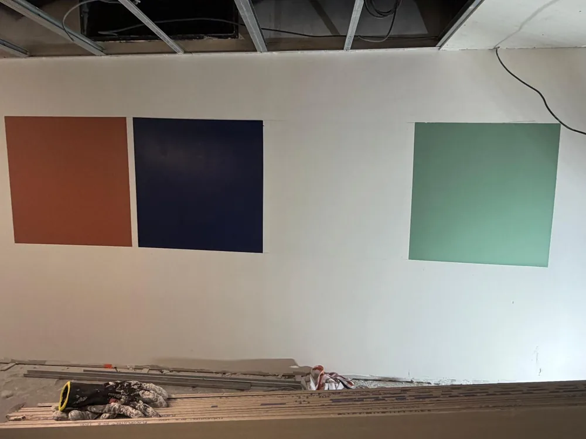
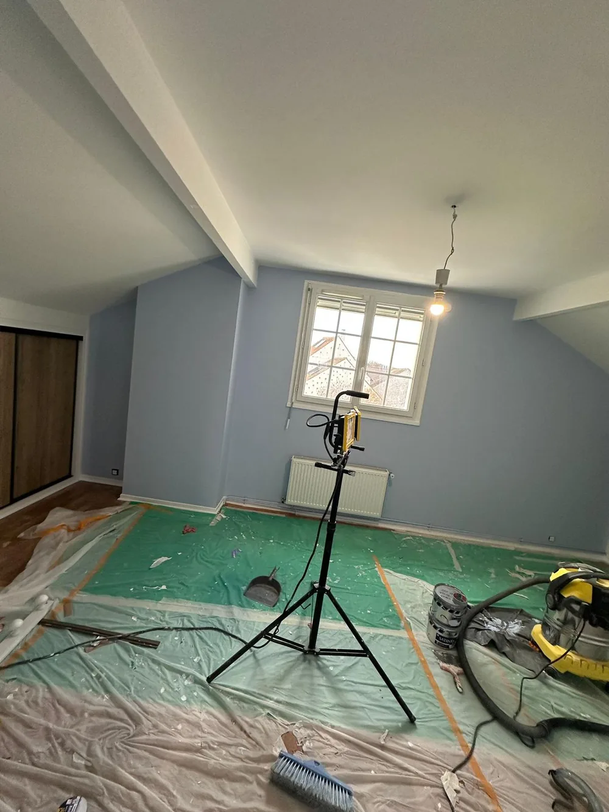
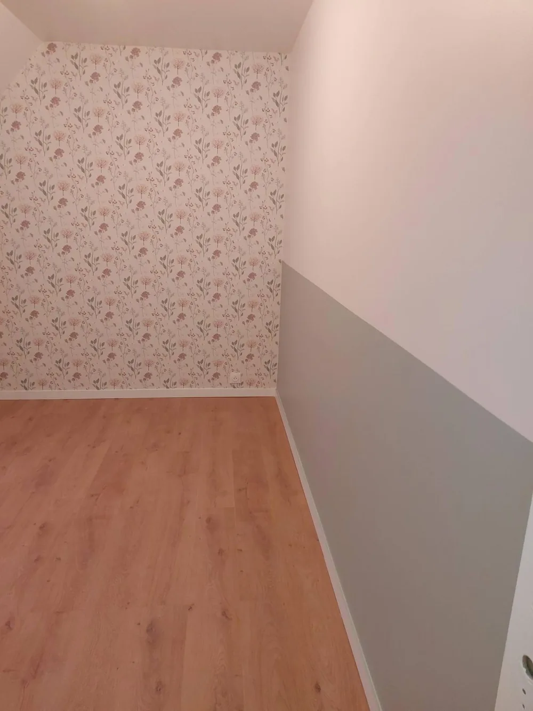
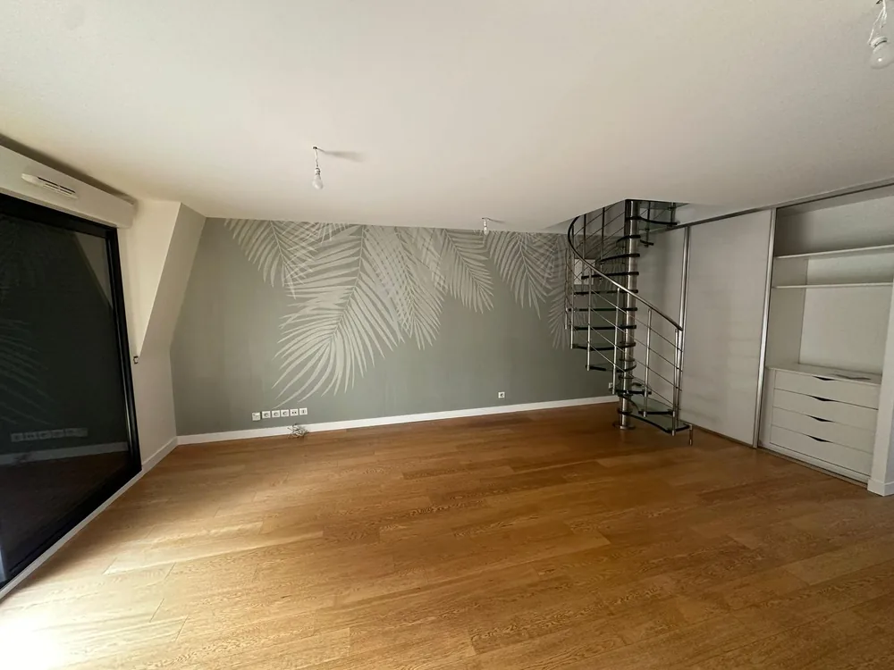

Depuis le Perche jusqu'en Normandie, nous nous déplaçons à Argentan pour vos travaux de rénovation, avec le même soin qu'en local et la même équipe du début à la fin.
À Argentan et dans le bocage ornais, nous apportons le même niveau d'exigence que pour nos chantiers locaux dans le Perche, sans sous-traitance.
Cloisons, enduits, ouvertures, dalles, pierres de taille et travaux de gros œuvre.
Enduits, doublage, isolation, placo, faux-plafonds et finitions.
Préparation des supports, sous-couche, finitions soignées sur tous types de surfaces.
Parquet, carrelage, vinyle, béton ciré, pose et ragréage compris.
Installation et réparation sanitaires, chaudières, pompes à chaleur, plancher chauffant.
Tableaux électriques, mise aux normes, domotique et création de circuits.




Oui. Argentan est à environ 80 km depuis notre base dans le Perche. C'est un déplacement que nous effectuons pour des chantiers de rénovation dans le bocage ornais.
Oui. Les corps de ferme et longères normandes nécessitent des compétences spécifiques que nous avons développées : maçonnerie en pierre, isolation, menuiseries, remise aux normes.
Un seul devis global est établi pour l'ensemble du chantier. Il est détaillé par poste, ce qui vous permet de valider ou d'ajuster chaque partie.
Oui. Nos travaux sont couverts par une garantie décennale, ce qui vous protège pendant 10 ans contre les malfaçons touchant à la solidité ou à l'usage du bâtiment.
Contactez-nous pour un devis gratuit. Nous nous déplaçons, nous évaluons, nous chiffrons, sans engagement de votre part.